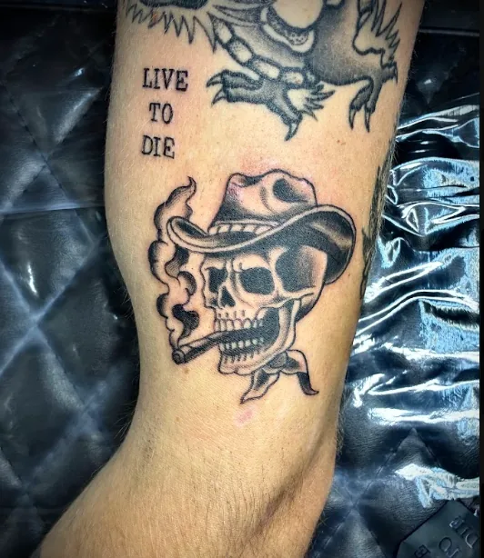
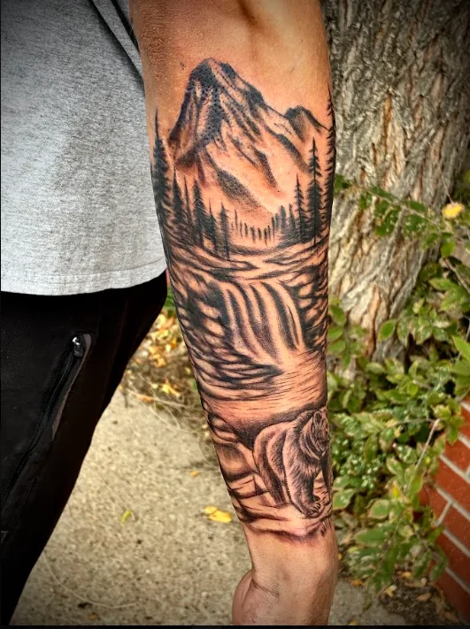
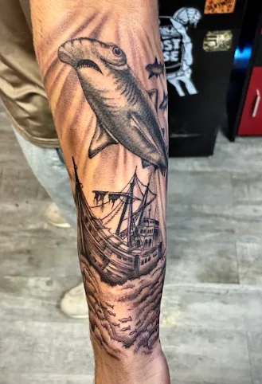
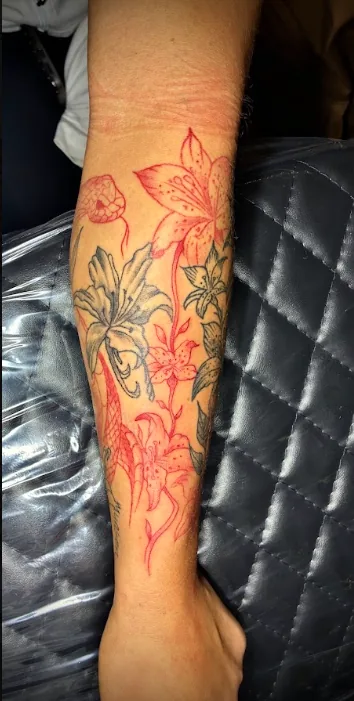
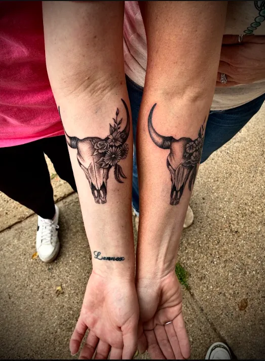
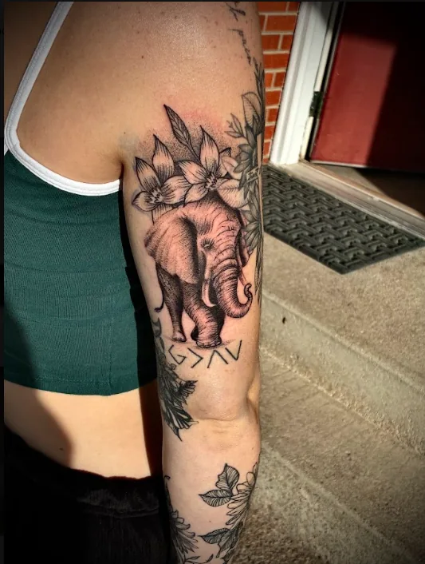
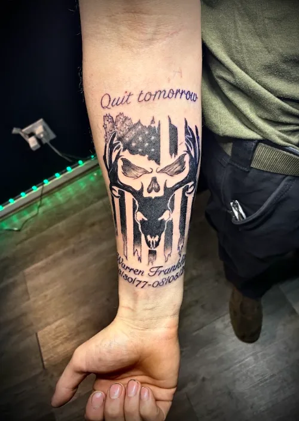
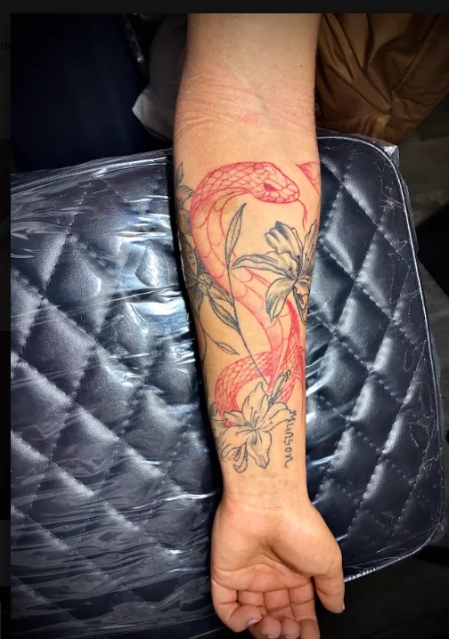
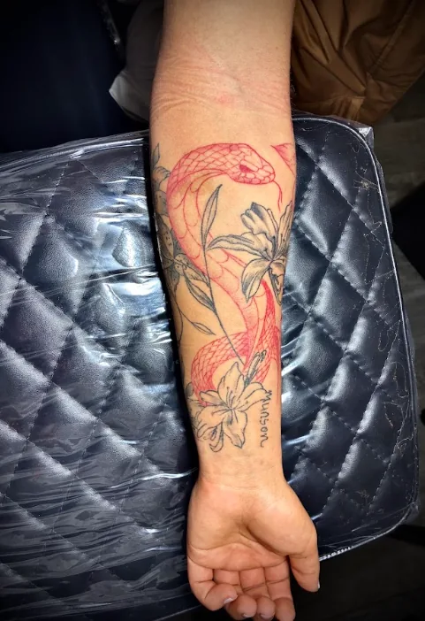
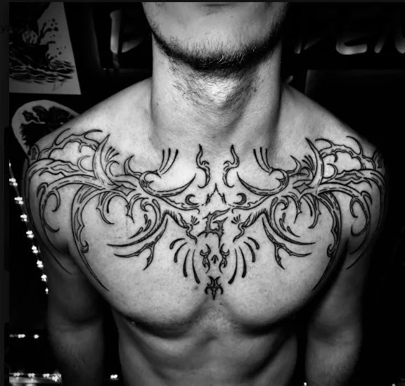

B&G01
Story in the details.
Layered illustration, careful shading.

Bold traditional work, custom color, and a steady hand in Chadron, Nebraska.
Layered shading, clean contrast, and the kind of depth that holds up over time.
See the work →Intentional linework that gives each piece room to breathe and read clean.
Explore styles →Start with a few good questions. Carson will get the context he needs to shape the idea with you.
Start the questionnaire →
Every piece begins with a conversation—not a prebuilt template. Bring the idea, the reference, or the feeling. Carson helps turn it into work you want to keep seeing.
A few recent pieces, shown at a considered scale.

B&GLayered illustration, careful shading.

BLACKWORKBold black, deliberate negative space.

COLORStrong outlines, saturated tones.

FLASHTraditional flash, clear silhouettes.

COLORDagger and gators in saturated color.

RECENTRecent custom pieces from the chair.
Contrast, texture, depth.
Bold color with a classic edge.
Intentional linework with room to breathe.
Located in Chadron, Nebraska. Appointments preferred, walk-ins welcome when the chair is open.


Build the idea, share the details, and send a clear starting point to the studio.
Build your tattoo ↗